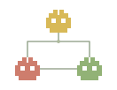

Good agents.
Great blueprints.
Explore agent architectures. Build your own.
64 architecture families384 application presetsFree to explore

Little agents. Shared ideas.
The cartridge collection.
This shelf is a little too specific.
Try another search or remove a filter.
Take the deck
into your IDE.
One free, offline skill. Search every architecture, then load only the blueprint you need.
Install in your project
Extract the ZIP and copy the entire agent-deck folder to the location for your tool. Keep scripts and references together.
| Tool | Folder in your project |
|---|---|
| Codex, Cursor, Copilot | .agents/skills/agent-deck/ |
| Claude Code | .claude/skills/agent-deck/ |
Reload skills or open a fresh session. Use $agent-deck in Codex, or /agent-deck in Cursor, Claude Code and Copilot.
Use Agent Deck to choose an architecture for my document assistant. Compare a simple baseline with an advanced alternative, then adapt it to my stack.
The package needs no account or API key. Your assistant supplies the AI; blueprints still need implementation and evaluation.
Patterns with provenance.
Room for your own experiments.
These are original, framework-neutral design presets informed by papers and engineering guides. They include implementation contracts and evaluation plans. Their performance has not been benchmarked.